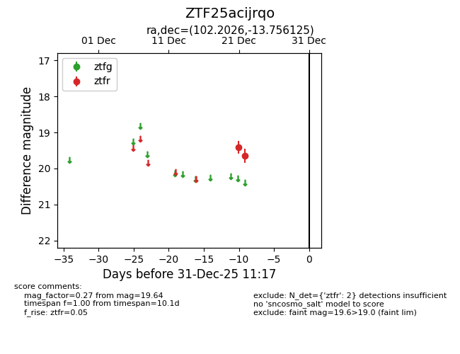
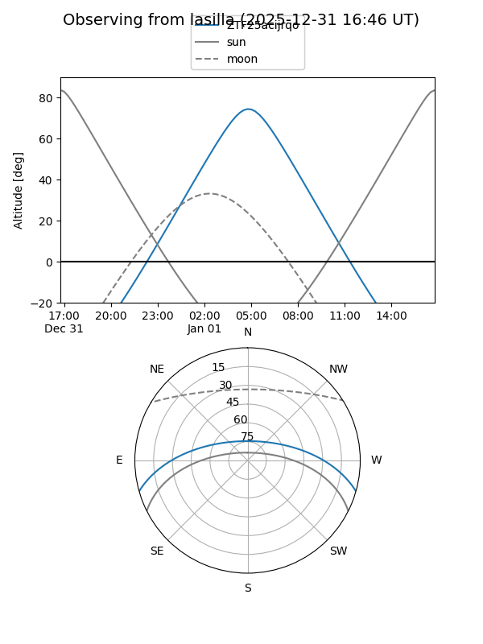
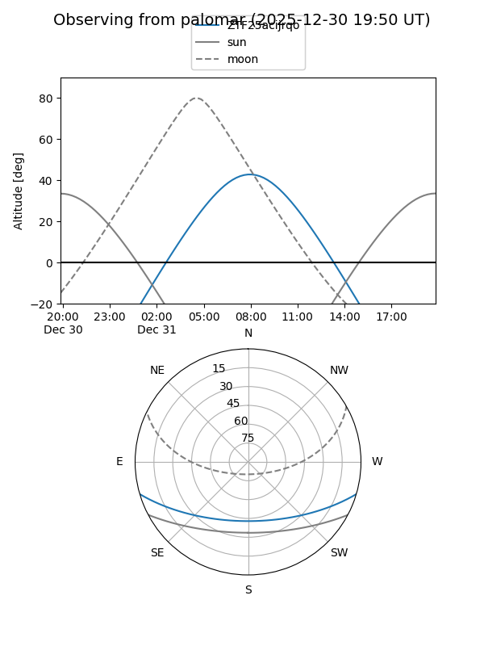

ZTF25acijrqo
Target ZTF25acijrqo at 2025-12-31 17:00
Aliases and brokers:
FINK:
Lasair:
ALeRCE:
alt names
ZTF25acijrqo (ztf,fink_ztf)
Coordinates:
equatorial (ra, dec) = 102.2026,-13.75613
equatorial (HMS+DMS) = 06:48:48.62,-13:45:22.05
galactic (l, b) = (224.9379,-6.79627)
Flags:
Photometry:
last ztfr=19.64
2 ztfr detections
Lightcurve

Visibility


Additional plots